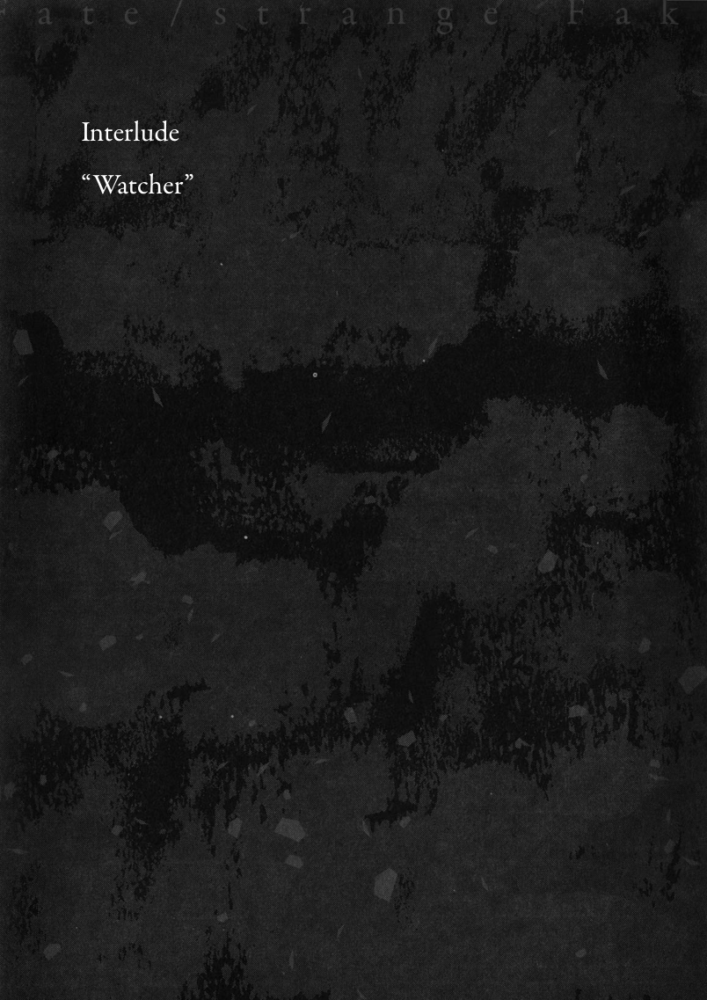

A mansão dos pântanos.
O tempo retrocede até o momento em que o Rei dos Heróis enfrentou o arqueiro misterioso.
Os Espíritos Heroicos invocados para a Guerra do Santo Graal se dividem, em essência, em sete classes: Saber, Archer, Lancer, Caster, Rider, Assassin e Berserker. Diz-se, porém, que uma "Classe Extra", que não corresponde a nenhuma dessas, muito ocasionalmente também pode ser invocada. Há registros que atestam que um Espírito Heroico pertencente a uma classe chamada "Avenger" realmente foi invocado na terceira Guerra do Santo Graal de Fuyuki.
Sigma, sentado numa cadeira resistente no térreo da mansão, havia recebido essa informação.
"E daí?" perguntou ele. "Esse 'Watcher' é uma Classe Extra?"
Uma "sombra" — o menino com asas presas às costas — apareceu para responder à pergunta de Sigma.
"Não exatamente. No sistema de Fuyuki, uma Classe Extra nunca substitui um dos três cavaleiros. Pelas fases restantes, o Servo destinado a lutar nesta Guerra do Santo Graal deveria ser Lancer. Quem será esse Lancer é você, não o Espírito Heroico. O que você chamou foi um observador, e um obstáculo que você deve superar para se tornar Lancer enquanto ainda está vivo."
"Eu entendo o sentido das suas palavras. Dormi e pensei nisso de novo desde que você me contou hoje de manhã, mas não consigo aceitar essa resposta. Um humano se tornar Lancer simplesmente não faz sentido."
Sigma expôs sua opinião com indiferença.
"Nós também não esperávamos que você começasse tirando uma soneca. Bem, é esta Guerra do Santo Graal inteira que não faz sentido. Se nos manifestássemos como uma Classe Extra de verdade — embora seja estranho falar de uma Classe Extra 'de verdade' — provavelmente nos manifestaríamos como 'Gatekeeper'", respondeu a sombra, na forma do menino com o cajado de serpente.
"Embora seja duvidoso que a regra de que um dos três cavaleiros não pode se tornar uma Classe Extra sequer se aplique. Como 'sombras', recebemos certo grau de informação sobre esta Guerra a partir do Graal, mas essa informação se baseia nas regras originais de Fuyuki. Esta Guerra do Santo Graal de Snowfield se desviou demais disso."
"Ela é falsa; essas coisas acontecem", assentiu Sigma facilmente, dando de ombros.
"E o 'Watcher' que você invocou", continuou a sombra, "já começou a observar esta cidade. E aparentemente já encontrou uma fissura."
"O que você quer dizer?"
"O Espírito Heroico que deveria ter sido invocado como Archer, um dos três cavaleiros, foi transmutado na Classe Extra Avenger, e coisas que jamais deveriam ter sido invocadas se infiltraram nesta terra, atraídas umas pelas outras."
Nesse ponto, a criança desapareceu, e o "capitão" surgiu num canto, apoiado numa bengala.
"Sim, consigo sentir uma presença parecida com a minha na direção do desfiladeiro..."
"O que quer dizer com 'parecida com a sua'?"
"Um aroma nostálgico que faz meu sangue ferver. Sinto uma fúria pura borbulhando das minhas entranhas. Ah, se eu tivesse sido invocado como um Espírito Heroico de verdade, eu teria me manifestado não como Rider, mas como uma classe erguida sobre a vingança. Não posso deixar de lamentar não ser isso... de estar aqui como sua sombra."
A emoção foi desaparecendo gradualmente das palavras, e Sigma sentiu o dinamismo sinistro se revolvendo no fundo delas como magma frio, mas não fez nenhuma tentativa de continuar aquela conversa. As autoproclamadas sombras às vezes lhe falavam de arrependimento ou ódio, mas ele não se interessava por nada disso. Não parecia provável que isso lhe fornecesse uma pista sobre o Nome Verdadeiro do Espírito Heroico que havia invocado, então sua política era agir como se não estivesse ouvindo.
Mas, talvez por sua natureza inata, ou pelo treinamento especial que havia recebido desde a infância, toda palavra que chegava aos seus ouvidos era registrada com fidelidade em seu cérebro. Até mesmo as palavras que pretendia ignorar.
Ainda assim, ele não podia continuar ouvindo as sombras resmungarem para sempre. Sigma reuniu o pouco que havia compreendido da conversa anterior e decidiu lhes fazer uma pergunta.
"Em resumo, vocês observam objetivamente a Guerra do Santo Graal nesta cidade... É isso?"
"Nós não; aquilo que você invocou... para ser preciso."
Em algum lugar da cidade. O gabinete de Dumas.
"...Desde esta manhã, estou com uma sensação estranha de que estão me observando."
Caster — Alexandre Dumas père — inclinou a cabeça para o lado e olhou ao redor. Estava no quarto que lhe fora destinado, "revisando" a adaga com veneno de hidra.
Tudo parecia como de costume. Ele via as incontáveis estantes e montanhas de livros, as inúmeras comidas e petiscos diferentes arrumados sobre a mesa, o notebook conectado à internet e o telefone com fio de desenho antiquado.
Mas havia algo diferente. Ele se sentia inquieto, como se a própria qualidade do espaço tivesse mudado.
Dumas mostrou os dentes num sorriso largo e retomou o trabalho alegremente.
"Ora, quem se importa? Tudo fica melhor com plateia."
Alegre, alegre, como se declarasse que até o acidente era um dos encantos do drama.
"Que eu seja amaldiçoado se vou apreciar um espetáculo desta magnitude sozinho! Ha ha!"
A mansão dos pântanos.
"Então me diga: como eu pareço do ponto de vista de vocês?"
Uma súbita onda de curiosidade levou Sigma a interrogar as sombras.
Sigma nunca havia refletido sobre a própria identidade. Tinha tão pouco interesse em si mesmo quanto nos acontecimentos do mundo em geral. Nem mesmo sabia sua idade exata. Muitas vezes o tomavam por alguém no fim da adolescência, mas ele tinha a sensação de que havia parado de crescer e envelhecer vários anos antes.
"Aqueles posers mexeram demais no seu corpo quando você ainda era um soldado mirim", sua contratante havia zombado. "Acho que sua expectativa de vida provavelmente é menor que a de uma pessoa normal. Tipo, você vai continuar jovem por muito tempo, mas, quando sua hora chegar, vai envelhecer rápido, e pronto, acabou."
Ela provavelmente tinha razão, mas ele não se importava. Sabia que, no ramo em que trabalhava, suas chances de morrer de velhice eram extremamente pequenas.
No entanto, ele tinha interesse em saber o que era.
Sigma não acreditava em deuses nem em budas. No momento em que se tornou participante da Guerra do Santo Graal, percebeu a existência de "poderes" muito acima dele. Essa compreensão não significava, é claro, que ele depositasse fé neles.
Sigma apenas queria saber o que um desses grandes poderes pensava dele. Provavelmente diria que ele era lixo, ou que tanto fazia se existisse ou não. Ele esperava que concluísse que sua vida não tinha valor, mas ainda assim precisava perguntar. Não tinha intenção de obedecer se lhe dissessem para morrer, mas, se lhe dissessem que sua existência era sem sentido, Sigma não seria capaz de apresentar uma refutação convincente.
Enquanto Sigma pensava em tudo isso, a criança com o cajado de serpente balançava a cabeça com uma expressão preocupada.
"Desculpe, mas Watcher não consegue ver o passado. Ele só vem observando os acontecimentos desde o momento em que foi invocado.
Então, para Watcher, você ainda não é ninguém."
"Não existe esse 'ainda'; vou continuar sendo ninguém."
"Será? Isso significa que você pode se tornar qualquer pessoa. E, se obtiver o Graal, poderá ganhar poder para rivalizar com Espíritos Heroicos."
O Santo Graal, onipotente realizador de desejos. Sigma voltou a pensar no que faria se de fato o obtivesse. Como antes, porém, nenhum desejo à altura de um artefato tão exaltado lhe ocorria.
"...Eu me pergunto... Se eu conseguisse o Graal, poderia ter sonhos mais comuns? Sonhos no sentido de aspirações, não do tipo que se tem à noite", explicou Sigma de forma truncada.
"Oh, essa é uma boa ideia!" concordou alegremente a criança com o cajado de serpente. "Sim, tenho certeza de que você poderia sonhar, se conseguisse o Graal. Assim como Watcher continua observando a realidade."
"A habilidade de observar o que acontece na cidade... Aposto que um Servo normal poderia vencer a Guerra do Santo Graal com facilidade assim."
"Exatamente, garoto! Vejo que finalmente entendeu."
O Capitão exibiu um sorriso perverso.
"De fato, se os outros participantes descobrissem a sua habilidade, brigariam para tomar posse de você antes mesmo de sair atrás do Graal!"
"...O quê?"
Sigma franziu levemente o cenho. Pensou por um instante e percebeu que o que o Capitão dizia fazia sentido.
"Entendi. No momento, eu sou, na prática, um recurso."
"Um recurso único largado bem no meio do campo de batalha, garoto. A disputa para tomar posse de você será feroz."
"Não me importo. Só não quero ser arrastado para isso e morrer."
Ele talvez não tivesse sonhos, mas não gostava de dor e não queria morrer nem passar fome. Sigma ponderou qual seria o melhor caminho para satisfazer esses desejos mínimos.
"Então fique mais forte", disse-lhe com gentileza o menino de asas nas costas. "Se você não quer ser arrastado, junte-se ao lado que arrasta os outros."
"Não seja absurdo. Até minha contratante já é uma maga maluca."
"Supere seus obstáculos. Watcher continuará lhe dando provações que você muito bem pode chamar de absurdas. Supere-as e, aos poucos, você se tornará alguém. Não será mais apenas o Soldado A."
Sigma considerou as palavras do menino alado por um momento, ainda sem expressão. Então, pela primeira vez, decidiu discordar. Era um modesto primeiro passo rumo à declaração de sua intenção de escapar da morte.
"Eu não sou o Soldado A;
"Eu sou... Σ."